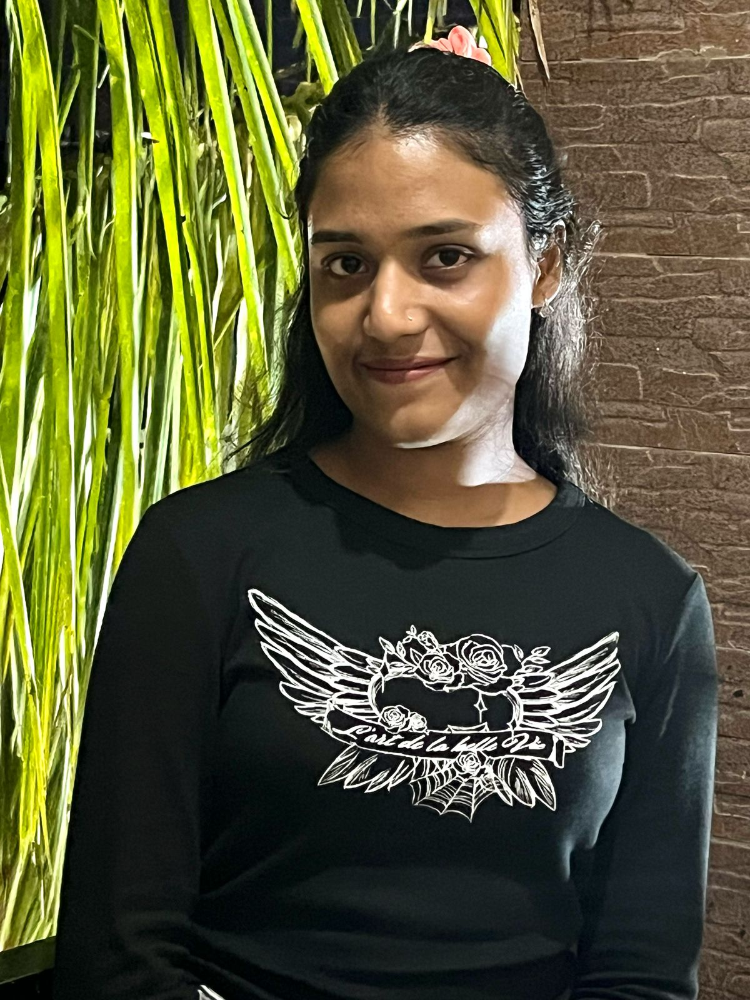

From frontends that flow
to models that know.
— a web developer blending design aesthetics with machine intelligence to build experiences that work and learn.
about me

Hey there,
I’m a Full Stack Web Developer passionate about building smart, scalable, and user-centric
digital experiences. My toolkit includes Java, React, MySQL, and I integrate Machine Learning
using Python to solve real-world problems.
From pastel-themed planner apps to a CNN-powered forest fire detection system — I build with
clarity and purpose.
Currently focused on merging AI and UI, creating systems that think smart and look sharp.
My Stack, My Strength
A toolkit built with purpose — across frontends, backends, and intelligent systems.
🎨 Frontend Development
I build responsive, accessible, and visually engaging user interfaces using HTML5, CSS3, and modern JavaScript (ES6+). I frequently work with React.js and Tailwind CSS to deliver smooth, component-based experiences, while leveraging Figma to prototype user-first designs. From clean layouts to interactive UI logic, my focus remains on usability and performance.
⚙️ Backend & Server-Side Development
My backend expertise is rooted in Java, particularly using JSP and Servlets, complemented by experience in Flask for Python-based applications. I’ve worked with RESTful APIs, basic Node.js, and implemented authentication systems for session-based access. I aim to keep my backend architecture clean, modular, and scalable.
🤖 Machine Learning & AI
On the ML side, I use Python libraries such as NumPy, Pandas, and Matplotlib for data handling and visualization. I’ve built models using scikit-learn, including classification systems, and developed a CNN model for image-based forest fire detection. My workflow includes Jupyter Notebooks, Google Colab, and light model deployment for web integration.
🗃️ Databases & Dev Tools
For data management and integration, I use MySQL with PHPMyAdmin, ensuring smooth communication between frontend and backend systems. I version control my work using Git and GitHub, deploy frontend apps via GitHub Pages, and host Python applications using Render. Tools like Google Colab help me prototype quickly in cloud environments.
Featured Projects
A curated selection of my most meaningful builds — where design meets logic, and frontend meets AI. These projects reflect not just what I can code, but how I think, solve, and create with purpose. Each line of code tells a story of experimentation, iteration, and impact.
AORUS Gigabyte Landing Page Clone
A high-fidelity frontend clone of the official AORUS Gigabyte gaming hardware website. Focused on precision, performance, and aesthetics, this project demonstrates mastery over responsive layout, scroll-based animations, and advanced CSS effects. It reflects a pixel-perfect recreation tailored for web3-inspired UI principles.
Mech EXIA
Mech EXIA is an interactive vehicle maintenance learning platform designed for DIY enthusiasts, vehicle owners, and mechanics. It offers tutorials, troubleshooting guides, expert chatbot consultations, and a marketplace for tools and parts. Powered by AI, Mech EXIA simplifies diagnostics and promotes hands-on learning. The platform aims to make automotive care more accessible, engaging, and efficient.
Forest Fire Detection using CNN
A deep learning-based image classification model built to detect forest fires from satellite and drone footage in real-time. This project utilizes a custom Convolutional Neural Network trained on a Kaggle dataset to classify 'fire' and 'no fire' conditions, helping mitigate environmental disasters through early detection. The dashboard was implemented using Flask for deployment.
AI for Precision Diagnostics
A lightweight diagnostic web tool powered by a Logistic Regression model to predict diabetes using clinical data. Built with accessibility in mind for rural healthcare, this tool supports multilingual chatbots, offline support, and data privacy features.

Milestones & Certifications
This page highlights my key professional achievements, including internships, hackathons, certifications, and learning journeys that have shaped my skills in web development, artificial intelligence, cybersecurity, and beyond. Each experience reflects my commitment to continuous growth and real-world problem-solving.
Hackathons
Hack'Ndore – Indore Municipal Corporation
Worked in a team of three to build a website for revenue management during the Hack'Ndore hackathon. The project focused on improving transparency and visualization of municipal revenue data using web technologies.
Reimagine Hackathon – Sheryians Coding School
Redesigned and recreated the official website for AORUS Gigabyte with enhanced user experience and responsive design. The project emphasized modern UI/UX principles and was completed under a strict timeline.
Certifications
Fundamentals of Cybersecurity – Zscaler
Completed a foundational course on network and cloud security concepts offered by Zscaler Training. The course covered essential cybersecurity principles and best practices for modern IT environments.
Practical GitHub Actions – LinkedIn Learning
Learned to automate software workflows using GitHub Actions. Covered CI/CD pipelines,
deployment automation, and action scripting to boost developer productivity.
🗓️ Completed on: May 19, 2025
{kind=link}
React Masterclass – Physics Wallah
Participated in a masterclass focused on building e-commerce applications using React.
Explored component structure, state management, and frontend project setup.
🗓️ Completed on: October 20, 2024
Learning Journey
Generative AI – Google & LinkedIn Learning
Explored the foundations and applications of Generative AI including text, image, and code generation. Topics covered diffusion models, LLMs, ethical AI, and real-world use cases.
Python for Beginners – Udemy
A hands-on beginner course covering Python basics, control flow, functions, file handling, and data structures. Built mini projects for solidifying concepts.
Complete Web Development Bootcamp – Hitesh Choudhary
A comprehensive full-stack development course covering HTML, CSS, JavaScript, React, Node.js, MongoDB, and project deployment. Includes live project building and debugging techniques.
Contact me
Want to get in touch? Whether it’s a project, opportunity, or just a quick hello — I’m always open to meaningful conversations. Feel free to drop me an email anytime!